Poluição nos Oceanos
O oceano cobre cerca de 70% da superfície da terra!
- Alberga 98% das espécies do planeta
- Regula o clima do planeta
- Fornece alimentos
- Viabiliza vários serviços essenciais (Transportes, lazer, etc)
Mas a humanidade tem visto o oceano principalmente como um bom e grande vazadouro de lixo
(80% da poluição dos oceanos vem dos continentes, nomeadamente das zonas costeiras)
Produtos lançados no mar ou que chegam ao mar a partir de terra (I)
Derrames de petróleo (marés negras)
- Acidentais (condutas quebradas, navios de transporte de petróleo naufragados, desastres na operação de exploração)
- Lavagem de tanques dos navios de transporte
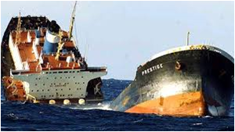
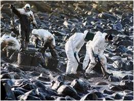
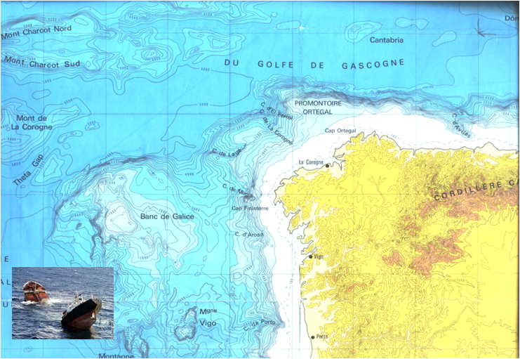
Elevado risco permanente de ocorrência de acidentes de poluição marinha na ZEE Portuguesa
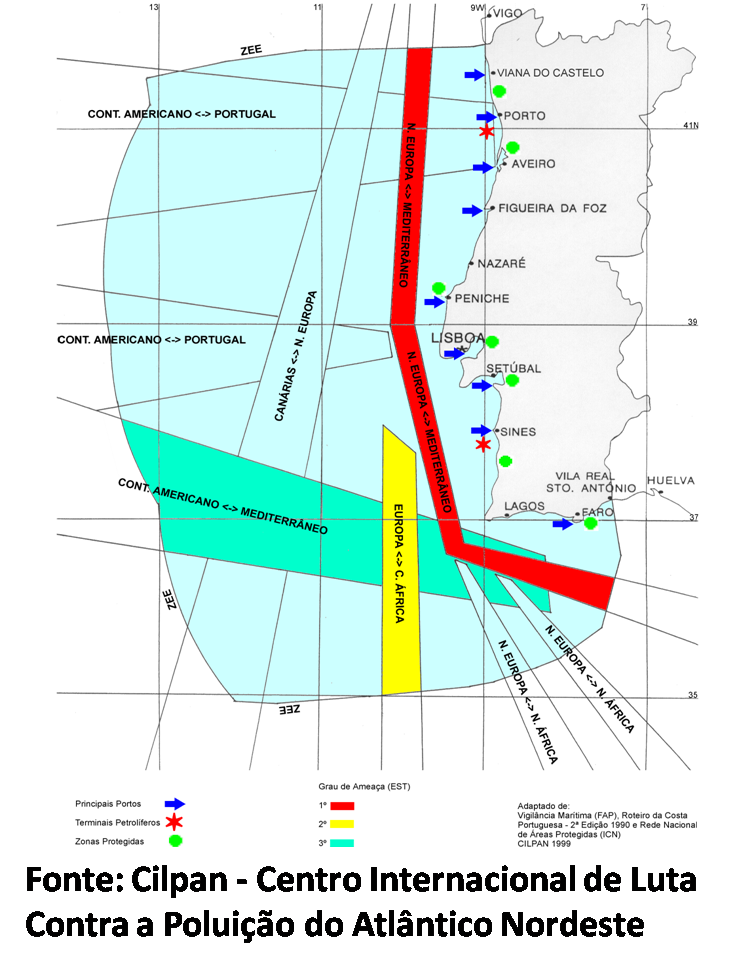
Efeitos dos derrames de petróleo no ecosistema
Efeitos físicos e Efeitos químicos (componentes tóxicas: benzeno, tolueno , xileno, etc)
- Aves marinhas (as asas ficam envolvidas em petróleo impedindo que voem)
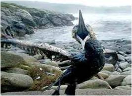
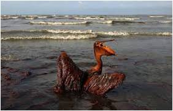
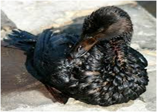
- Mamíferos marinhos (a pele fica impedida de funcionar como isolador)
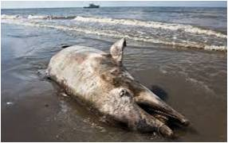
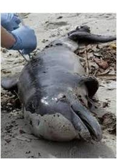
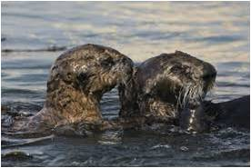
- Peixes , moluscos , crustáceos , répteis (asfixia)
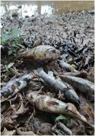
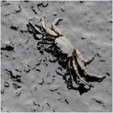
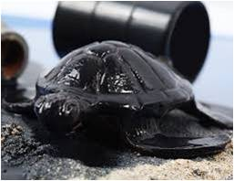
- Plancton e algas (redução da taxa de fotosíntese)
Produtos lançados no mar ou que chegam ao mar a partir de terra(II)
Lixo (plásticos) (nota: os plásticos podem levar centenas de anos a decompor-se!)
- Sacos de compras
- Garrafas de bebidas e respectivas tampas
- Embalagens de comida
- Palhinhas e talheres de plástico
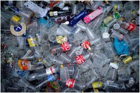
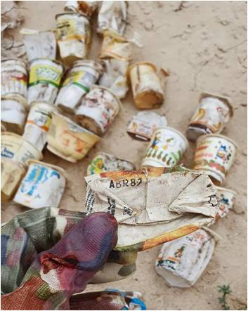
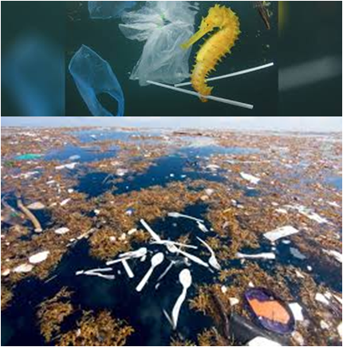
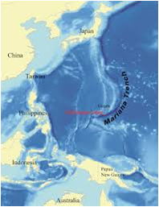
um saco de plástico detectado na fossa das Marianas (o local mais profundo dos oceanos, no Pacífico), a 11 mil metros de profundidade
Efeitos dos plásticos no oceano
Efeitos físicos
Mamíferos marinhos ou peixes (engolem ou ficam presos nos plásticos)
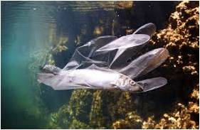
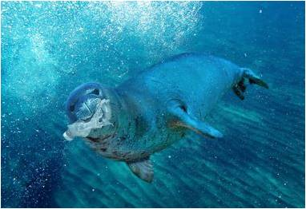
Encontrado cachalote morto com seis quilos de plástico no estômago. O animal tinha ingerido sacos de plástico, garrafas, chinelos de dedo e 115 copos ("National Geographic, 2018")
Efeitos químicos
Composição dos plásticos (cuja matéria-prima é o petróleo) inclui substâncias tóxicas, muitas delas carcinogénicas ou neurotóxicas (cloreto de vinil do pvc, dioxinas e benzeno do poliestireno, formaldeído dos policarbonatos, etc)
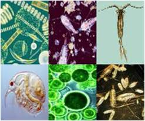
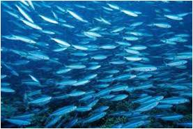
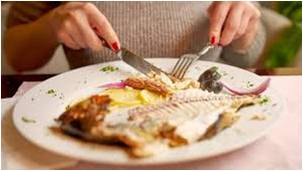
Sopa de lixo Nos oceanos
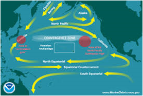
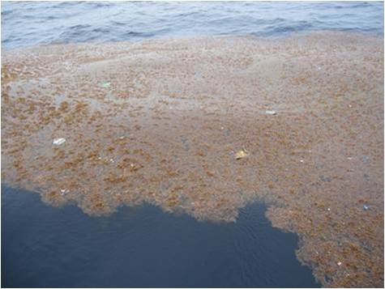
A sopa de plástico do Pacífico norte, detectada há 20 anos, tem 17 vezes o tamanho de Portugal (+- 1,6 milhões de metros quadrados). Circulação na superfície dos oceanos gera zonas de convergência onde os microplásticos se acumulam
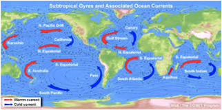
As maiores concentrações no Atlântico Norte foram observadas entre 22ºN e 38ºN, numa região centrada a 32ºN
Produtos lançados no mar ou que chegam ao mar a partir de terra
Material de pesca (redes, cabos, etc)
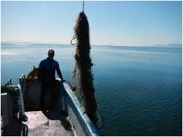
Efeitos do material de pesca (redes, cabos)
Peixes, crustáceos, moluscos, aves e outros animais marinhos (tartarugas, golfinhos, tubarões, etc) Podem comer ou ficar presos nas redes ou nos cabos
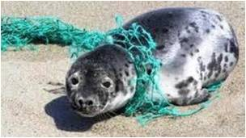
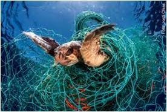
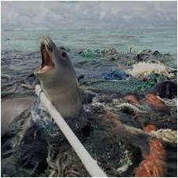
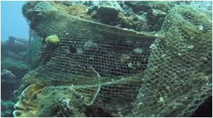
Produtos lançados no mar ou que chegam ao mar a partir de terra (IV)
Outro lixo
- Vidro, metais, papel, tecidos, borracha, madeira
- Beatas de cigarro
- Cotonetes
- Máscaras (moda 2020-21)
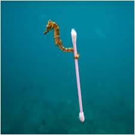
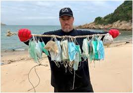
Produtos lançados no mar ou que chegam ao mar a partir de terra(V)
Produtos provenientes de despejos, descargas dos rios, etc
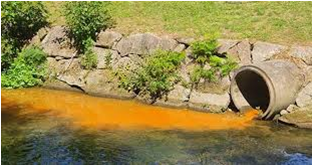
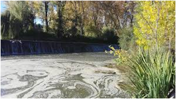
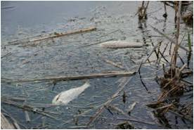
- Produtos provenientes da actividade comercial, industrial ou doméstica (óleos alimentares, restos de comida, etc)
- Medicamentos , através dos esgotos (antibióticos, antidepressivos, hormonas, medicação para o coração ou contra o cancro, analgésicos, além de grandes quantidades de cafeina)
- Produtos de higiene pessoal lançados na sanita (cotonetes, toalhitas húmidas, tampões, pensos, cabelos, etc)
Alterações no oceano devidas à interacção com a atmosfera
Oceano absorve cerca de 30% do co2 da atmosfera
Abrir